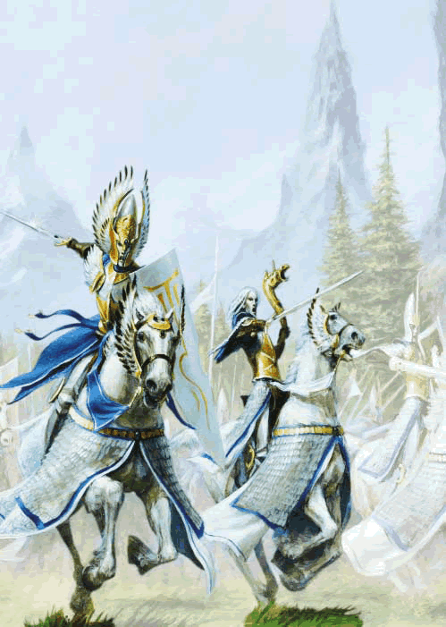

我们的家园正被敌人所围困。
但是我们会象祖先一样抗争。
在这个黑暗的时代，我们坠落的兄第破坏着我们的海岸。
但我们会打败他们获得胜利。
因为我们是asur,Aenarion的真正后裔！
我们的家园，永远不会陷落！
— Ulthuan的守护者，精灵王子Tyrion
高等精灵（港台名称为“神武精灵”）——— 一个古老和高贵的种族。他们有优雅的军事技能和不可思议的魔法。在人类还很原始并互相争战的时候。高等精灵的船舰就已经探索了未知的大陸。他们观望着帝国崛起和衰落。勇敢的击退所有妄想侵犯其家园的敌人。
说起战术家，那么没有多少军队可以与高傲，雄浑的高等精灵相媲美。致命、迅猛而且准确，高等精灵无时无处都运用最可怖的法术以及最具破坏性的炮火痛击他们的敌人。高傲、傲慢而又优雅的精灵们总是以最完美的形态出现在战场上，装备着坚固的甲胄，挥舞着品质精良的武器。
HIGH ELVES按我们的翻译其实就是“高等精灵”，同其他奇幻世界里的HIGH ELVES没有什么差别，但是实在不明白为什么台湾和香港的战棋玩家会给他们起名为“神武精灵”。（难道仅仅是因为很酷？）虽然大陆的Warhammer的中文名称全来源与港台，我们也一度沿用这个名字。但是最后经过讨论，集体同意彻底干掉“神武”这个称呼，往后我们还是叫他本名吧，高等精灵！
高等精灵，是三大精灵中的一支（WH中还有丛林精灵和黑暗精灵）也是最“正统”的精灵。精灵族在战锤世界是一个大种族，他们在游戏中的共同特点是：单位部队的能力值比人类高一些，似乎都很厉害。但分值也都比较贵，所以决定其战场上不会有大量的部队可供调遣。这点和靠人海的orc正好相反，精灵的士兵就是“少而精”。同样也需要精灵玩家必须非常小心地指挥，不能贸然行动。因为每个部队都很宝贵，任何损失都会很惨，如果被数量众多的敌人包围就更会陷入绝境。也因此，精灵往往是后发制人，常采用防守反击的战术。
精灵都有引以为傲的射击技巧，平常上个一两队弓箭手几乎就是全场扫射了。魔法方面，精灵的魔法都很齐，而且在施放/破咒方面也有许多优势。最后就是近战了，精灵总的来说不是“非常”善于近战。或许你会疑惑精灵的近战技巧都很高（容易命中），主动值也很高（先攻权高）。为什么说不善于近战呢？因为他们的坚韧度只有3，不管不同士兵到特殊人物统统如此。所以承受伤害的能力不如其他种族，这也是无可厚非的事，精灵在任何奇幻世界都是体质较弱，这点在Warhammer世界也不例外。但是这也不代表精灵没有强力的肉搏的部队，有不少特殊的兵种就是被训练为近战的。
说了这么多精灵的共性，下面重点介绍下高等精灵吧，高等精灵在三族精灵里面是最富有正义感的。高精的射击、魔法和近战都不错，魔法似乎尤其出众。射击方面，高精有傲视全种族的弩炮，用过就知道，比別人贵那么多是为什么，而且除非一些阿沙步鲁怪力乱神护卫的部队，其他的主力部队也不敢直接走进弩炮的射程范围，可见有多恐怖。魔法方面，高精享有破法＋１的优势，这让他们在法术方面很是吃香，还有一点，魔法物品都比別人便宜五分之一，乍看之下似乎只有那么一点点 的不公平，玩久就会知道这是一个相当不错的优势。近战方面，有“卡位”一級棒的矛兵，能射又能近战的海云卫队，战略灵活性相当高的银盔骑兵，全种族速度最快的战车，泛用性和杀伤力极高的贺夫剑士，速度最快又不怕火的龙王子骑兵，超坚强力量可怕的肉盾白獅卫队，令人不寒而慄的鳳凰卫队等等，都是不错的选择。（笔者就是在WH中选择了神武精灵族，不光是因为玩GAME选ELF的传统，也因为高精的模型都很华丽^ ^）

下面是各个部队的简介
基础部队
弓箭手（HIGH ELF ARCHERS）
不用多说，精灵的弓箭手永远是优秀的弓箭手。


矛兵（High Elf Spearmen）
高精的基础部队，也是最实用的部队之一。既可持盾也可持矛，独有三排反击能力让其他种族的部队望而却步（其他种族最多也就两排反击）但矛兵最大的用处就是“卡位”，所谓“卡位”就是死死地卡在战场前方阻挡敌军进军，更可以拖住敌人的主力在战略上取得莫大的优势。而且分值低（当然...和兽人基础兵比还是高）。即使是其他种族的玩家也都夸赞其实用性。

海云卫队（Lothern Sea Guard）
特殊版本的矛兵，同时拥有近战和远射的能力。


银盔骑士（SILVER HELMS）
战略灵活性很高的兵种，之所以这么说是因为银盔在什么都不装备的时候可以做炮灰（夜风：本人其实很不舍得拿精灵部队当炮灰，毕竟每条人命都很珍贵呀...）。装备满的时候又成为主力重骑兵。让敌人无从分辨，非常好用。

